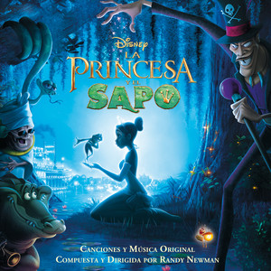

Bienvenidos a mi página web

La princesa y el Sapo es una pelicula infantil que se creo en el Año 2009. Es una película animada de Walt Disney Animation Studios, es la 1° película de la tercera parte de los clásicos de Disney, siendo la 49° película del Canon animado de Disney, y la 1° película de la Era Revivida de Disney. Producida por Peter Del Vecho, Aghi D. Koh, John Lasseter y Craig Sost, y dirigida por Ron Clements y John Musker. Estrenada el 25 de noviembre de 2009 en Estados Unidos y el 25 de Diciembre en Colombia. Esta pelicula trata sobre La trabajadora y ambiciosa, Tiana sueña con abrir el restaurante más fino de Nueva Orleans. Su sueño se desvía un poco cuando conoce al príncipe Naveen, quien ha sido transformado en un anfibio por el Dr. Facilier. Confundiéndola con una princesa y esperando romper el hechizo, Naveen le da un beso a la pobre Tiana, transformándola en una rana. La pareja vive una gran aventura por los pantanos para buscar la ayuda de una poderosa sacerdotisa vudú.
A cerca De
Bienvenidos a nuestra página dedicada a
"La Princesa y el Sapo", la encantadora película animada de
Walt Disney Animation Studios estrenada en 2009. Aquí encontrarás todo
lo que necesitas saber sobre esta mágica historia, desde detalles
sobre la producción y el equipo creativo, hasta análisis de los
personajes y los temas que hacen de esta película un clásico moderno.
Nuestra página tiene como propósito celebrar y explorar "La Princesa y
el Sapo" en profundidad.
Ofrecemos:
- Información detallada: Datos sobre la creación de la película, su lanzamiento y su impacto cultural.
- Reseñas y análisis: Artículos que desglosan los elementos clave de la historia, los personajes y la música.
- Material adicional: Imágenes, videos y curiosidades para los verdaderos fanáticos.
- Espacio para la comunidad: Foros y secciones de comentarios donde puedes compartir tus pensamientos y teorías sobre la película.
Esperamos que disfrutes explorando esta página tanto como la disfrute creándola. ¡Sumérgete en el maravilloso mundo de Tiana y Naveen y redescubre la magia de "La Princesa y el Sapo"!
Contacto
Si tienes alguna pregunta, no dudes en contactarnos Contactanos